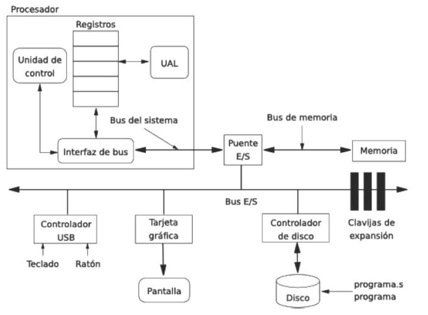

Según la tecnología clásica, las distintas unidades de las computadoras estarán interconectadas entre sí, siendo la responsable del control del sistema una unidad llamada unidad de control. Desde entonces, esta arquitectura ha sido seguida, con modificaciones, claro está, por todos los fabricantes de hardware.
Un equipo o sistema informático, según Von Neumann, está formado por unos periféricos de entrada (teclado, ratón, touchpad, etc.), una CPU, que es donde se procesa la información y puede considerarse el cerebro del sistema, y unos periféricos de salida
(impresora, pantalla, etc.).
